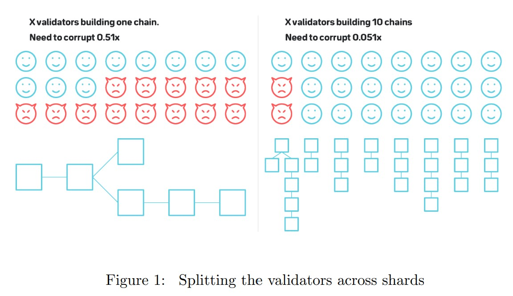

Nightshade - Near 协议分片设计
Tags: blockchain 论文
这篇文章是对 Nightshade 论文的摘要及总结。
分片是区块链扩容的一个重要方向。
传统的区块链如以太坊每秒仅能处理 20 个左右的交易。主要原因是以太坊中每个交易都要在每个节点上执行一遍, 单台机器的处理能力限制了以太坊的最大 TPS。
分片的思路是把所有节点进行分组，每个节点不再参与全部交易的验证，而是仅验证一部分的交易，因此可以突破单台机器处理能力的限制。
这篇文章介绍的夜影协议(Nightshade) 是 Near protocol 提出的分片方案。
分片的基本设计
区块链依靠在所有节点 Replica 所有交易来保证数据的正确性，每个节点如果只验证一部分状态明显会降低安全性。

上图系统共有 10 个分片（shard chain）, 每个分片链由 1 / 10 的节点验证，理论上 TPS 可以提升十倍，但安全性也随之下降，假设原始的区块链中 51% 以上的恶意节点合谋才可以破坏整条链的状态，那么分片后只要有 5.1% (51% / 10) 的恶意节点合谋就足够破坏某个分片上的状态。
大部分分片方案的应对思路是随机分配验证者，只要让恶意节点不在同一条分片链上他们就无法合谋。大多数方案选择用一条独立的链来实现管理分片, 处理 POS（proof of stake）共识，生成随机数等等。如以太坊 2.0 的 Beacon chain, PolkaDot 的 Relay chain, Cosmos 的 Cosmos Hub. Nightshade 中也使用这样的一条 Beacon chain (信标链).
一般来说区块链的节点会负责 1) 处理交易 2) Relay 合法的交易和区块给其他节点 3) 保存整条链的状态和历史数据。这三点都会影响整个网络的处理能力。从长远来看状态存储的压力比较大，即使 TPS 一直保持 20 左右链的状态也会一直增长，但短期来看区块链处理交易的能力更加重要，以太坊全状态大约 100 G （论文发表时），大多数节点仍可以轻松处理，但是以太坊的 TPS 仅有 20 左右，很难满足实际需求。
Nightshade 的分片会分割以上三点：分片中的节点仅验证和传播和分片相关的交易，并且只存储和分片相关的状态。Nightshade 方案中分片数量和计算、存储、网络等资源为线性关系。
Nightshade 对 Beacon chain 和分片链进行了简化，在 Nightshade 中仅维护一条区块链，所有分片上的交易都会在这一条链上被确认。一个块中的交易列表按照分片数量被分为多个 chunks, 每个 chunk 对应一个分片，分片的验证者只需要下载和验证分片的 chunk 而不需要下载整个块，系统中没有节点会验证整个块的交易和状态。现实中由于网络因素有可能导致 chunks 丢失，所以我们允许每个块中的分片可以对应一个或零个 chunk。

出块
Nightshade 中有两个角色共同维护协议：出块者和验证者。在系统中任何时间点都有 w 个出块者和 wv 个验证者，系统采用 POS (proof of stake)，出块者和验证者都会质押一定的代币作为不遵守协议时的惩罚。系统包含 n 个分片，每个出块者和验证者都仅下载和验证一部分的状态。
在本论文讨论的模型中 w = 100, wv = 10000, n = 1000。
系统的参与者可以通过质押大量代币成为出块者，一个出块者会被分配到 Sw 个分片上（如果 Sw = 40, 那么每个分片就会有 Sw * w / n = 4 个出块者），Nightshade 中按照 Epoch（代）的概念选择验证者和出块者的分片，出块者需要在 Epoch 开始前下载分片的状态，并在整个 Epoch 中处理分片上的交易。
对于每个分片，都有一个出块者负责生成 chunk（和该分片相关的交易列表），在最终的块里只会包含交易列表的 merkle root 而不会包含完整的交易列表。同一个分片上的出块者会轮流出块，如上面描述的每个分片上有 4 个出块者，则每个出块者隔 4 个块就要产生一次 chunk。
跨分片交易
上文描述的分片方案中不同分片之间状态是完全隔离的，无法进行跨分片的交易。
举一个简单的例子，Alice 想要转账给 Bob，如果他们在同一个分片中交易可以正常处理，但如果 Alice 和 Bob 在不同的分片，则每个分片的验证者都缺失了一部分状态，无法完成这笔交易的验证。
有两类方法可以支持跨分片交易
- 同步：在同一个块进行与跨分片交易相关的多个分片的状态更新，验证者们通过与其他分片上的节点合作来处理交易。
- 异步：异步的完成跨分片交易的状态更新，比如某个分片先更新一部分状态，另一个分片再更新其余的状态。这种方式简单且易于协作，Cosmos、 Ethereum serenity (以太坊 2.0)、Near、Kadena 等都采用异步方案。
区块链或分片的互操作性在分片以外的场景也非常重要。分片的场景下每个分片是同构的，且可以借助 Beacon chain 协调，所以跨分片的设计相比跨链会更容易一些。
Nightshade 中采用了收据交易(receipt transaction) 的概念。发起跨链交易时首先在一个分片上执行交易，这个交易随后被打包在分片的 chunk 里，当 chunk 被打包到块中时，会生成一个 receipt transaction，验证者将 receipt transaction 发送到下一个需要更新的分片上执行。如果这笔交易需要更新更多的分片上的状态，则会重复以上过程。
这个方案有可能出现的一个问题是：某个特定的分片成为热点，大量的 receipt transaction 需要发送到这个分片上，导致分片的处理能力不够。为了解决这个问题 Nightshade 会在 chunk 中记录最后处理的跨链交易的进度：块和分片以及处理到了哪个 receipt transaction。下一个块的 chunk 会继续处理接下来的 receipt transaction。如果待处理的 receipt transaction 数量实在太多超过了一定的限制，系统会禁止再发送新的跨链交易。

状态验证
分片的核心思想是验证者不用去下载和验证所有的状态。当节点与分片交互时，如何在不下载分片的情况下确定其状态是一个难题。
有个简单的方案：
假设整个系统总共有 1000 个验证节点，如果其中恶意节点不超过 20%，那么当我们从中随机挑选 200 个节点组成分片时恶意节点占比在 1/3 以上的可能性几乎可以忽略。(恶意节点在 1/3 以下保证了分片可以使用 BFT 类共识)。
在这个简单的假设中，每个 Epoch 的验证者都会去询问之前的一组验证者，并获取到主链的信息。而 BFT 类共识保证恶意节点在 1/3 以下时块是合法的，且不会产生分叉。因此我们只需从最初的状态去检查验证者的签名，就可以确定这条链的合法性。

简单方案只考虑了系统初始时有固定数量的恶意节点，但如果我们引入一个新的假设：在系统运行时，诚实的验证者也可以被腐化为恶意节点，这个简单方案就无法正常工作了。攻击者仅需腐化一个分片中 2/3n + 1 的验证者就可以生成非法的状态。这种安全性对于区块链来说显然太弱了。
Nightshade 在 BFT 共识之上增加了挑战（challenge）机制提升安全性。任何的参与者检测到一个 chunk 包含非法状态时，都可以提供一个证明对 chunk 的出块者进行惩罚，同时获取奖励。因为系统中大多数节点是没有非法 chunk 的分片状态的，所以证明中必须要包含足够的信息。Nightshade 要求在 chunk 中保存每一个交易执行后的分片状态的 merkle root，这样挑战者只用找到第一个非法的状态，并从前一个状态进行验证就可以证明 chunk 是非法的。
Nightshade 通过隐藏具体的验证者来进一步降低验证者被腐化的可能性。这个想法类似于 Algorand 的方案，但需要注意的是即使隐藏了验证者，一个攻击者仍能通过广播来倡议验证者进行合谋。当诚实的验证者发现倡议合谋的广播消息时，可以下载攻击者想要攻击的分片并进行监控，这样即使合谋成功，诚实的验证者也可以立刻发送挑战来惩罚攻击者。
Nightshade 用以下方法来隐藏验证者
- 在每个 Epoch 开始前，验证者使用 VRF（可验证随机方法）确定被分配到的分片，并在 Epoch 中负责验证这些分片。
- 所有的验证者都在区块上签名，而非在 chunk 上签名。

验证者有可能不去真正下载分片状态并执行验证，而是通过从网络中观察其他验证者的消息并进行重复来获利。采用这种策略的验证者没有给网络带来任何额外的安全性。为了防止这种行为，我们要求验证者首先提交一个承诺（commitment），承诺中要么包含一条消息确定 chunk 的交易都是合法的，要么包含对某个非法状态的挑战。验证者需要等待一定的时间后再去揭露实际提交内容，任何提交错误的验证结果，以及无法揭露承诺内容的验证者都会被惩罚。
数据可见性
数据可见性是区块链分片设计的另一个难题。即使有了复杂的验证和挑战机制，攻击者仍然有作恶空间。同一个分片上的验证者可以共谋作恶，只发布 chunk header 而不发布完整的 chunk 内容。因为主链只会对 chunk 做确认不会对其验证（如果验证每个 chunk，分片就没有意义了），所以主链的验证者无法判断 chunk 的内容是否被发布，出块者仍会把 chunk 包含在块中。如果这些 chunk 包含了非法的状态，即使有诚实的节点对其产生怀疑，因为 chunk 的内容没有发布，节点无法生成挑战证明。
NightShade 的解决方案是引入擦除码（Erasure Codes, 方案和 PolkaDot 和以太坊 2.0 类似），擦除码允许我们在一部分数据不可见时仍能恢复整个区块。
我们对协议进行修改。当一个出块者生成新的 chunk 时，同时也要对 chunk 的内容生成擦除码，chunk 的出块者把擦除码分割成 w 份（系统中出块者的数量），并用 merkle tree 计算每一个碎片，然后把 merkle root 保存在 chunk header 里。
Chunk 的出块者随后通过 onepart 消息（用来发送擦除码的碎片）把擦除码碎片按照每人一份发送给所有出块者，消息包含：chunk header，擦除码碎片的编号，擦除码碎片的内容、擦除码碎片的 merkle proof 以及出块者对这条消息的签名。
当主链的出块者收到块时，会检查是否已经收到了块中所有 chunks 的 onepart 消息，如果没有则需要等待全部消息接受完成后再继续处理。主链出块者确定每个 chunks 都收到了对应的 onepart 消息后，会向 peers 请求每个 chunks 其余的擦除码碎片，并重新构建 chunks。如果出块者无法成功构建 chunks, 或者无法获取某个 chunk 的 onepart 消息，则会停止处理该块。反之，如果出块者能够成功的构建出完整的 chunks，则可以确定 chunks 的完整内容的确被发布了，Chunk header 如果包含非法状态，那么任何节点都可以对其生成挑战证明。

当前的协议仍有一个问题，主链出块者有可能在收集完所有的 onepart 消息之前就进行签名。这样出块者仍会收到出块奖励，但不会受到任何惩罚，当大多数节点采取这种策略时数据可见性就无法得到保证了。
为了解决这个问题，chunk 出块者需要对每个擦除码碎片分配颜色（红色或蓝色），并且将颜色保存为 bitmask 与 chunk 的内容一起编码成擦除码，当 chunk 出块者发送 onepart 消息时同时也会附上碎片的颜色，并且擦除码碎片的 merkle root 也会同颜色一起计算。
当主链出块者对块进行签名时，需要在签名中包含所有红色的 chunks 碎片组成的 bitmask。因为完整的 bitmask 只存在于擦除码中，主链的出块者只有通过擦除码重新构造 chunk 内容和 bitmask 才能获取正确的颜色。因此主链出块者必须确保自己接收到所有的 onepart 消息，并且可以正确构造所有 chunks 内容，才可以确保签名是正确的。如果出块者没有收到某个 onepart 消息却仍然签名，则有 50% 的概率猜错颜色从而被惩罚。